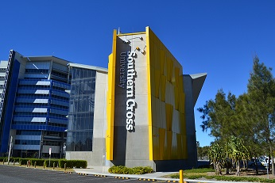

Introduction
Hi everyone, My name is Mohit Anand. I am born in a city of
punjab named Batala.Our state Punab is very famous for its rich and
cultural heritage. Many different types of people live in here
with different religion and homestyles. I belong to Hindu
religion family. Our family consist of four members i.e. my
father, mother, younger sister and I.
We are a middle class family.My father is an electrical engineer and is at
good position in a government electricity broad.My mother is a house wife
and my sister is studying in secondary level.I am also having my email
address for contactEmail me
Aim and Education
After completing my high school,I decided to move abroad
for my further higher studies.My aim is to become a well
profound software engineer in a
multi national company. So I decided to start studying
information technology in australia, one of the most reliable
country for international students and also rich in their standard
of livings and education.
After comming to melbourne, Australia, my life became
very struggleful.No one is here who is my own and with
whom I can share my views.I have to do all of my things and
stuff my own in order to earn my livings and stay here.
I took admission in one of the well renowned universty of australia i.e.
Southern cross university,
also know as SCU. It comes in top 10 universities in australia and is also
very famous for its international student support service.

Students come from different parts of the world to study here.
My classmates are all from different counties and have different native
languages.So we all always talk to each other and share our ideas in
english language only. English is the comon language that is used among
all the students, teachers and different people around ausralia.
A person has to be always hardworking and focussed towards his/her goal in
order to achieve success in his career.
Facts of life
There are some points to become sucessful in life.
- Focus
- Determination
- Hardwork
Criteria of markings
and many more... There are six levels of grading assessments in australia They are:
- Fail (F)
- Resit (R)
- Pass (P)
- Credit (C)
- Distinction (D)
- High Distinction (HD)
Tutors and Subjects
I am in second session and there are three units I have to
complete in this session. Two units are taught by one teacher
only and one is done by other.
- Atie Asadikia
- Web Development
- Atie Asadikia
- Application Development
- Stuart Danvers
- Language and Learning in a descipline